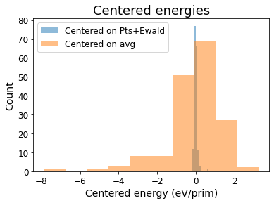
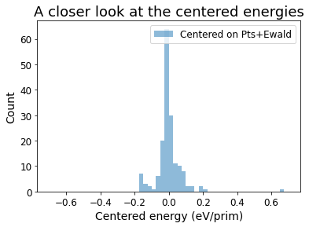
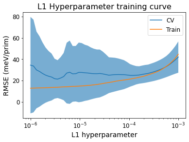
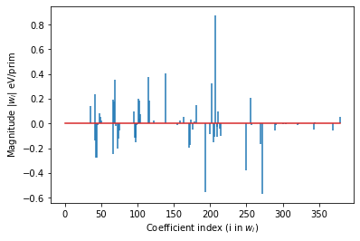
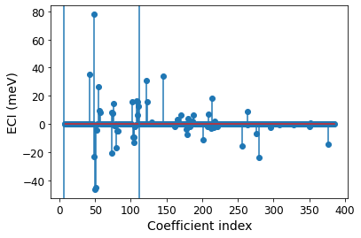

This page was generated from
docs/src/notebooks/ce-fit-w-centering.ipynb.
Fitting an ionic cluster expansion with energy centering#
Determining a good center for data can speed up optimization model solving and lead to sparser, more physical solutions for complex systems. Here we pick up from “lmo-drx-ce-mc.ipynb” and fit the data in a different way, using L1 regularization.
[1]:
import numpy as np
import matplotlib.pyplot as plt
import json
from monty.serialization import loadfn
from pymatgen.core.structure import Structure
from smol.cofe import ClusterSubspace, StructureWrangler, ClusterExpansion, RegressionData
from smol.io import load_work
Load the LMO DRX prim#
[2]:
prim = loadfn("data/lmo_drx_prim.json")
print(prim)
prim
Full Formula (Li0.7 Mn1.1 O1)
Reduced Formula: Li0.7Mn1.1O1
abc : 2.969850 2.969850 2.969850
angles: 60.000000 60.000000 60.000000
Overall Charge: +1.5
Sites (4)
# SP a b c
--- --------------------------------------------- ---- ---- ----
0 Li+:0.250, Mn2+:0.250 0.75 0.75 0.75
1 Li+:0.250, Mn2+:0.250 0.25 0.25 0.25
2 Li+:0.200, Mn2+:0.200, Mn3+:0.200, Mn4+:0.200 0 0 0
3 O2- 0.5 0.5 0.5
If you see this text, the Crystal Toolkit Jupyter Lab
extension is not installed. You can install it by running
"pip install crystaltoolkit-extension"
from the same environment you run "jupyter lab".
This only works in Jupyter Lab 3.x or above.
Structure Summary
Lattice
abc : 2.96985 2.9698500000000005 2.96985
angles : 60.00000000000001 59.99999999999999 60.00000000000001
volume : 18.522028420882272
A : 2.571965545429215 0.0 1.4849250000000003
B : 0.8573218484764051 2.4248723708682074 1.4849250000000003
C : 0.0 0.0 2.96985
Overall Charge: +1.5
PeriodicSite: Li+:0.250, Mn2+:0.250 (2.5720, 1.8187, 4.4548) [0.7500, 0.7500, 0.7500]
PeriodicSite: Li+:0.250, Mn2+:0.250 (0.8573, 0.6062, 1.4849) [0.2500, 0.2500, 0.2500]
PeriodicSite: Li+:0.200, Mn2+:0.200, Mn3+:0.200, Mn4+:0.200 (0.0000, 0.0000, 0.0000) [0.0000, 0.0000, 0.0000]
PeriodicSite: O2- (1.7146, 1.2124, 2.9699) [0.5000, 0.5000, 0.5000]
1) Create the cluster subspace#
[3]:
from smol.cofe import ClusterSubspace
from smol.cofe.extern import EwaldTerm
cutoffs = {2: 6, 3: 4, 4:2}
ltol, stol, atol = 0.15, 0.20, 15
basis = 'sinusoid'
cs = ClusterSubspace.from_cutoffs(
structure=prim,
cutoffs=cutoffs,
ltol=ltol,
stol=stol,
angle_tol=atol,
supercell_size=('O2-'),
basis=basis,
orthonormal=False
)
cs.add_external_term(EwaldTerm())
2) Load data into a Structure Wrangler#
[4]:
# load the training structures with oxidation state assigned
from monty.serialization import loadfn
entries = loadfn("data/lmo_drx_entries.json")
[5]:
sw = StructureWrangler(cs)
# obtaining the structure mappings for this dataset is lengthy...
for entry in entries:
sw.add_entry(entry, verbose=False)
[6]:
print('Our feature matrix has the following dimensions:', sw.feature_matrix.shape)
print(sw.cluster_subspace)
Our feature matrix has the following dimensions: (238, 387)
Basis/Orthogonal/Orthonormal : sinusoid/True/False
Unit Cell Composition : Li+0.7 Mn2+0.7 Mn3+0.2 Mn4+0.2 O2-1
Number of Orbits : 40
No. of Correlation Functions : 386
Cluster Cutoffs : 2: 5.94, 3: 3.64
External Terms : [EwaldTerm(total)]
Orbit Summary
------------------------------------------------------------------------
| ID Degree Cluster Diameter Multiplicity No. Functions |
| 0 0 NA 0 1 |
| 1 1 0.0000 2 2 |
| 2 1 0.0000 1 4 |
| 3 2 1.8187 8 8 |
| 4 2 2.1000 6 3 |
| 5 2 2.9698 12 3 |
| 6 2 2.9699 6 10 |
| 7 2 3.4825 24 8 |
| 8 2 3.6373 4 3 |
| 9 2 3.6373 4 3 |
| 10 2 4.2000 6 3 |
| 11 2 4.2000 3 10 |
| 12 2 4.5768 24 8 |
| 13 2 4.6957 24 3 |
| 14 2 5.1439 24 4 |
| 15 2 5.1439 12 10 |
| 16 2 5.4560 24 8 |
| 17 2 5.4560 8 8 |
| 18 2 5.9397 12 3 |
| 19 2 5.9397 6 10 |
| 20 3 2.1000 12 12 |
| 21 3 2.9699 24 6 |
| 22 3 2.9699 12 12 |
| 23 3 2.9699 12 20 |
| 24 3 2.9699 8 4 |
| 25 3 2.9699 8 4 |
| 26 3 2.9699 8 20 |
| 27 3 3.4825 48 32 |
| 28 3 3.4825 48 16 |
| 29 3 3.4825 24 16 |
| 30 3 3.4825 24 12 |
| 31 3 3.4825 24 12 |
| 32 3 3.4825 24 20 |
| 33 3 3.4825 12 12 |
| 34 3 3.4825 12 20 |
| 35 3 3.6373 24 16 |
| 36 3 3.6373 24 8 |
| 37 3 3.6373 24 8 |
| 38 3 3.6373 24 12 |
| 39 3 3.6373 4 12 |
------------------------------------------------------------------------
3) Perform a piecewise fit, with the first fit only using the Points and Ewald features.#
[7]:
from smol.cofe.wrangling.tools import unique_corr_vector_indices
# get indices of unique correlation vectors (take smallest energy if duplicated)
unique_inds = unique_corr_vector_indices(sw, 'energy')
[8]:
unique_energies = sw.get_property_vector('energy')[unique_inds]
print(f'There are {len(unique_inds)} unique structure to train on.')
avg_en = np.average(unique_energies)
std_en = np.std(unique_energies)
print(f'The average energy is {avg_en}, while the std. dev. is {std_en} eV/prim')
There are 170 unique structure to train on.
The average energy is -20.41894778320028, while the std. dev. is 1.4573599233718875 eV/prim
[9]:
point_inds = sw.cluster_subspace.function_inds_by_size[1]
ewald_ind = sw.feature_matrix.shape[1] - 1
print(f'The point indices are {point_inds}, while the Ewald index is {ewald_ind}')
initial_fit_cols = np.concatenate([point_inds, [ewald_ind]])
initial_fit_cols
The point indices are [1, 2, 3, 4, 5, 6], while the Ewald index is 386
[9]:
array([ 1, 2, 3, 4, 5, 6, 386])
Perform initial fit with only Points and Ewald features, and determine the intercept.#
[10]:
from sklearn.linear_model import Lasso
from sklearn.model_selection import RepeatedKFold, GridSearchCV
[11]:
lasso = Lasso(alpha=1e-6, fit_intercept=True, max_iter=int(1e7))
lasso.fit(sw.feature_matrix[unique_inds][:, initial_fit_cols], unique_energies)
initial_coefs = np.concatenate([[lasso.intercept_], lasso.coef_])
[12]:
print(f'The effective dielectric constant is {1 / initial_coefs[-1]}')
The effective dielectric constant is 18.361322767175043
Let’s visualize the variance that these features can capture. To do so, we plot the “centered energies” by subtracting the DFT energies by the contributions from the fitted Point and Ewald features.#
[13]:
centered_energies = unique_energies - np.dot(sw.feature_matrix[unique_inds][:, np.concatenate([[0], initial_fit_cols])], initial_coefs)
plt.hist(centered_energies, alpha=0.5, label='Centered on Pts+Ewald')
plt.hist(unique_energies - avg_en, alpha=0.5, label='Centered on avg')
plt.xlabel('Centered energy (eV/prim)', fontsize=14)
plt.xticks(fontsize=12)
plt.ylabel('Count', fontsize=14)
plt.yticks(fontsize=12)
plt.legend(fontsize=12)
plt.title('Centered energies', fontsize=18)
[13]:
Text(0.5, 1.0, 'Centered energies')

[14]:
bins = np.arange(-0.7, 0.71, 0.025)
plt.hist(centered_energies, bins=bins, alpha=0.5, label='Centered on Pts+Ewald')
plt.xlabel('Centered energy (eV/prim)', fontsize=14)
plt.xticks(fontsize=12)
plt.ylabel('Count', fontsize=14)
plt.yticks(fontsize=12)
plt.legend(fontsize=12)
plt.title('A closer look at the centered energies', fontsize=18)
[14]:
Text(0.5, 1.0, 'A closer look at the centered energies')

[15]:
print(f'The variance of DFT energies is {np.std(unique_energies)}, while the variance of the centered energy is {np.std(centered_energies)} eV/prim')
The variance of DFT energies is 1.4573599233718875, while the variance of the centered energy is 0.0796597906890954 eV/prim
4) Perform cross validation on the rest of features to train the L1 hyperparameter.#
[16]:
high_order_cols = np.setdiff1d(np.arange(1, sw.feature_matrix.shape[1]), initial_fit_cols)
[17]:
alpha_scan = np.logspace(-6, -3, 50) # range of L1 hyperparameters to scan
rkf = RepeatedKFold(n_repeats=1, n_splits=5)
[18]:
test_inds = [test for train, test in rkf.split(sw.feature_matrix[unique_inds], unique_energies)]
train_inds = [train for train, test in rkf.split(sw.feature_matrix[unique_inds], unique_energies)]
[19]:
from sklearn.metrics import mean_squared_error
test_errs = []
train_errs = []
for alpha in alpha_scan:
lasso = Lasso(alpha=alpha,
fit_intercept=False,
max_iter=int(1e7)
)
test_rmses = []
# Cross validation fits
for train_index, test_index in zip(train_inds, test_inds):
act_train_inds = [unique_inds[ind] for ind in train_index] # Adjust indices to reflect actual feature matrix rows
act_test_inds = [unique_inds[ind] for ind in test_index]
lasso.fit(sw.feature_matrix[act_train_inds][:, high_order_cols], centered_energies[train_index]) # Fit high order terms on the centered energies
all_coefs = np.concatenate([initial_coefs[:-1], lasso.coef_, [initial_coefs[-1]]])
this_pred = np.dot(sw.feature_matrix[act_test_inds], all_coefs) # Predictions on test set
this_test = mean_squared_error(this_pred, sw.get_property_vector('energy')[act_test_inds], squared=False)
test_rmses.append(this_test)
test_errs.append(test_rmses)
# Fit on entire training set
full_fit = Lasso(alpha=alpha, fit_intercept=False, max_iter=int(1e7))
full_fit.fit(sw.feature_matrix[unique_inds][:, high_order_cols], centered_energies)
all_coefs = np.concatenate([initial_coefs[:-1], full_fit.coef_, [initial_coefs[-1]]])
preds = np.dot(sw.feature_matrix[unique_inds], all_coefs)
train_rmse = mean_squared_error(preds, sw.get_property_vector('energy')[unique_inds], squared=False)
train_errs.append(train_rmse)
[20]:
mean_cvs = 1000 * np.array([np.average(tests) for tests in test_errs])
std_cvs = 1000 * np.array([np.std(tests) for tests in test_errs])
plt.plot(alpha_scan, mean_cvs, label='CV')
plt.fill_between(alpha_scan,
mean_cvs + std_cvs,
mean_cvs - std_cvs,
alpha=0.6
)
plt.plot(alpha_scan, 1000 * np.array(train_errs), label='Train')
plt.xscale('log')
plt.xlabel('L1 hyperparameter', fontsize=14)
plt.xticks(fontsize=12)
plt.ylabel('RMSE (meV/prim)', fontsize=14)
plt.yticks(fontsize=12)
plt.title('L1 Hyperparameter training curve', fontsize=16)
plt.legend(fontsize=12)
[20]:
<matplotlib.legend.Legend at 0x7f2fba2a44c0>

[21]:
# Find the optimal hyperparameter that minimizes the CV score
sorted_mean_cvs = sorted([(i, cv) for (i, cv) in enumerate(mean_cvs)], key=lambda t: t[1])
[22]:
opt_alpha = alpha_scan[sorted_mean_cvs[0][0]]
print(f'The optimal hyperparameter is {opt_alpha}')
The optimal hyperparameter is 3.5564803062231285e-06
5) Obtain the cluster expansion model that minimizes CV#
[23]:
final_fit = Lasso(alpha=opt_alpha, fit_intercept=False, max_iter=int(1e7))
final_fit.fit(sw.feature_matrix[unique_inds][:, high_order_cols], centered_energies)
all_coefs = np.concatenate([initial_coefs[:-1], final_fit.coef_, [initial_coefs[-1]]])
[24]:
reg_data = RegressionData.from_sklearn(
final_fit, sw.feature_matrix[unique_inds], unique_energies
)
expansion = ClusterExpansion(
sw.cluster_subspace, coefficients=all_coefs, regression_data=reg_data
)
6) Get an idea of the predictive capabilities of this cluster expansion#
[25]:
first_inds = [(size, inds[0]) for size, inds in sw.cluster_subspace.function_inds_by_size.items()]
[26]:
from sklearn.model_selection import train_test_split
X_train, X_test, y_train, y_test = train_test_split(
sw.feature_matrix[unique_inds], unique_energies,
test_size=0.2
)
final_fit = Lasso(alpha=opt_alpha, fit_intercept=False, max_iter=int(1e7))
final_fit.fit(sw.feature_matrix[unique_inds][:, high_order_cols], centered_energies)
all_coefs = np.concatenate([initial_coefs[:-1], final_fit.coef_, [initial_coefs[-1]]])
y_predict = np.dot(X_test, all_coefs)
y_train_predict = np.dot(X_train, all_coefs)
print(f'Out-of-sample RMSE is: {mean_squared_error(y_test, y_predict, squared=False)} eV/prim')
print(f'In-sample RMSE is: {mean_squared_error(y_train, y_train_predict, squared=False)} eV/prim')
print(f'Number of Features > 1E-5: {sum(np.abs(all_coefs) > 1E-5)}/{len(all_coefs)}')
first_pair = sw.cluster_subspace.orbits_by_size[2][0].bit_id
print(f'Point correlation coefficients: {all_coefs[:first_pair]}')
# plot the coefficients (excluding those for points))
plt.stem(range(len(all_coefs) - first_pair), all_coefs[first_pair:],
linefmt='-', markerfmt=' ')#, basefmt=' ')
plt.xlabel('Coefficient index (i in $w_i$)')
plt.ylabel('Magnitude |$w_i$| eV/prim')
Out-of-sample RMSE is: 0.010216714533226853 eV/prim
In-sample RMSE is: 0.014394358793882608 eV/prim
Number of Features > 1E-5: 76/387
Point correlation coefficients: [-23.11136312 -6.80864145 9.17087773 1.23408451 4.73489259
-3.1117202 -0.46576228]
[26]:
Text(0, 0.5, 'Magnitude |$w_i$| eV/prim')

7) Plot the ECI#
[27]:
reg_data = reg_data = RegressionData.from_sklearn(
final_fit, sw.feature_matrix[unique_inds], unique_energies
)
expansion = ClusterExpansion(cluster_subspace=sw.cluster_subspace,
coefficients=all_coefs,
regression_data=reg_data
)
[28]:
plt.stem(np.arange(7, len(expansion.eci)), 1000 * expansion.eci[7:]) # Plot ECI of pairs and triplets
for t in first_inds[1:]: # vertical lines denotes where points, pairs, and triplets cut off
plt.axvline(t[1]-0.5)
plt.xlabel('Coefficient index', fontsize=14)
plt.xticks(fontsize=12)
plt.ylabel('ECI (meV)', fontsize=14)
plt.yticks(fontsize=12)
[28]:
(array([-60., -40., -20., 0., 20., 40., 60., 80., 100.]),
[Text(0, 0, ''),
Text(0, 0, ''),
Text(0, 0, ''),
Text(0, 0, ''),
Text(0, 0, ''),
Text(0, 0, ''),
Text(0, 0, ''),
Text(0, 0, ''),
Text(0, 0, '')])
